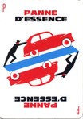

Série noire

Certains disent que la foudre ne tombe jamais deux fois au même endroit. D’autres que les problèmes volent en escadrille. J’ai fait le test…
Il y a 15 jours au bureau, mon PC pro a rendu l’âme. Le lendemain c’était un netbook à la maison. Quatre jours plus tard, le nano-PC qui me sert de NAS. Le surlendemain, mon disque dur principal ne répondait plus.
J’ai remplacé ce qui était HS et aujourd’hui tout fonctionne. Et j’ai appris 2-3 choses au passage :
Heureusement que j’avais un backup. J’ai écrit un billet sur mon système de sauvegarde quotidienne. Grâce à lui, j’ai pu traverser cette série noire avec beaucoup plus de sérénité. Certes, mon NAS étant HS depuis 2 jours lorsque mon disque dur a lâché j’ai cru perdre les heures de travail de l’intervalle, mais à aucun moment je n’ai pensé avoir perdu 15 ans de photos.
On peut récupérer un disque dur HS sans débourser une fortune auprès d’un labo de récupération de données.
Mon disque dur, un Seagate Backup+ Slim d’1To âgé d’à peine 1 an, se mettait bien sous tension mais n’était plus visible du BIOS et ne pouvait plus être accédé depuis Linux ni Windows. En tendant l’oreille, il y avait un « bzz bzz bzz » à la mise sous tension, puis plus rien.
Sous Ubuntu, le disque apparaissait aveclsusb, ses informations (modèle, numéro de série) étaient bien lues, mais ça n’allait pas plus loin./var/log/syslogmontrait l’erreur suivante :Puis j’ai appris que ce bruit était probablement lié à la tête de lecture coincée sur le plateau, et qu’on pouvait la décoincer en ouvrant le disque. Opération risquée, mais je n’avais rien à perdre.scsi 6:0:0:0: Direct-Access Seagate Backup+ SL 0143 PQ: 0 ANSI: 6 sd 6:0:0:0: Attached scsi generic sg1 type 0 sd 6:0:0:0: [sdb] Spinning up disk... usb 4-1: USB disconnect, device number 2 ......................ready sd 6:0:0:0: [sdb] READ CAPACITY failed sd 6:0:0:0: [sdb] Result: hostbyte=DID_NO_CONNECT driverbyte=DRIVER_OK
Alors j’ai suivi cette vidéo pour sortir le disque dur de son boîtier, puis celle-ci pour ouvrir le disque et décoincer la tête de lecture.
Bingo, le disque est reparti ! À cause des poussières qui se sont déposées lors de l’ouverture et risquent de le faire tomber en panne je ne l’utilise plus comme disque principal, en revanche il a remplacé mon backup, qui fonctionne bien mais ne faisait que 500Mo.Au passage, j’ai appris sur les forums que le support UAS (protocole de transfert USB) du noyau Linux était instable avec les disques durs Seagate. Cela explique peut-être les plantages que j’avais souvent depuis quelques mois. J’ai donc désactivé ce protocole en créant dans
/etc/modprobe.d/un fichierignore_uas.confcontenant la ligne suivante (0bc2:ab21 est le Vendor_ID:Product_ID du disque, que l’on trouve vialsusb) :options usb-storage quirks=0bc2:ab21:u
Enfin attention quand on manipule des équipements informatiques ! Leur longévité lorsqu’on les laisse tranquillement tourner dans un coin peut nous faire oublier que ce sont de petites choses fragiles. Or la panne du nano-PC est probablement liée aux manipulations de récupération des données du netbook (transport, greffes de disque dur, …), et celle du disque dur au fait qu’il a été beaucoup baladé lorsque le nano-PC était HS.
Bref, pour répondre à la question du début je penche plutôt du côté de l’escadrille. En espérant qu’elle aille par-dessus monts, et bois, et mers, et vents, et ne revienne pas de sitôt.